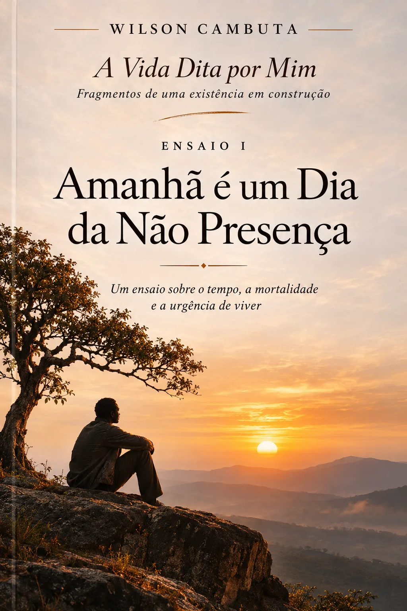

Criatividade como Intenção
Uma reflexão sobre a possibilidade de criar quando tanto já foi concebido.
Texto validado · PDF e EPUB ainda não integradosFragmentos de uma existência em construção. Uma escrita que procura escutar a vida antes de a explicar.

A Vida Dita por Mim reúne ensaios breves, filosóficos e autobiográficos. Cada texto parte de uma inquietação: o tempo, a memória, a criação, a condição humana e a procura de uma presença consciente na própria existência.
Uma reflexão sobre a finitude, a urgência de viver e a necessidade de enfrentar os bloqueios interiores. Mais do que ser visto pelo mundo, o narrador procura assumir a iniciativa de ser.
Uma coleção de ensaios em primeira pessoa, onde cada reflexão se acrescenta à anterior sem perder a sua autonomia.
Uma reflexão sobre a possibilidade de criar quando tanto já foi concebido.
Texto validado · PDF e EPUB ainda não integradosWilson Cambuta escreve ensaios e reflexões em primeira pessoa, onde a memória, o tempo, a existência e a iniciativa interior se encontram.
Nesta colecção, a escrita é um exercício de presença e de procura de uma voz própria. Cada publicação procura conservar a singularidade do pensamento que lhe deu origem.
Uma escrita em primeira pessoa, construída a partir da reflexão e da experiência.
Partir das próprias perguntas, sem a obrigação de repetir respostas.
Escrever a partir daquilo que se vive, se observa e se interroga interiormente.
Trabalhar a linguagem com atenção, preservando a singularidade da voz.
Textos autónomos, organizados sem alterar a numeração da coleção principal.
Uma reflexão sobre a consciência humana, o pensamento e a transformação do mundo.
PDF revisto · Publicação por realizar